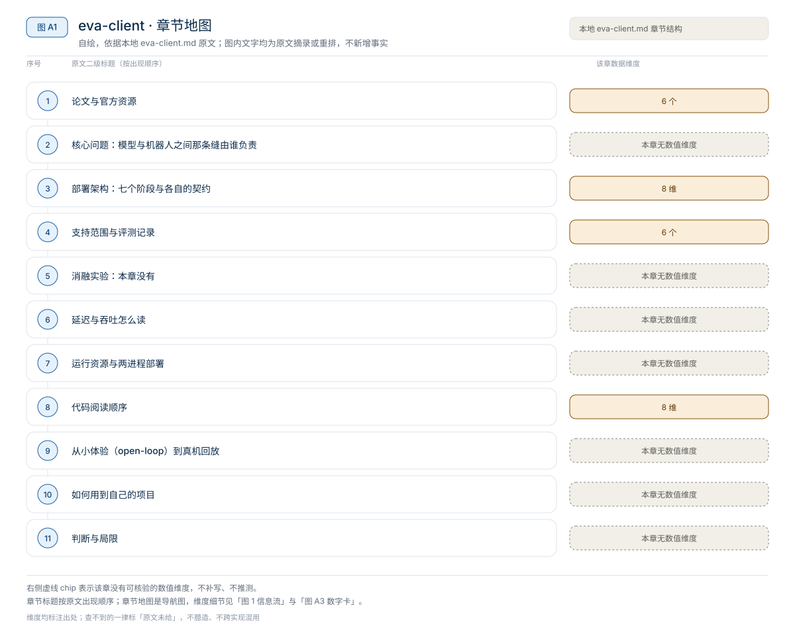
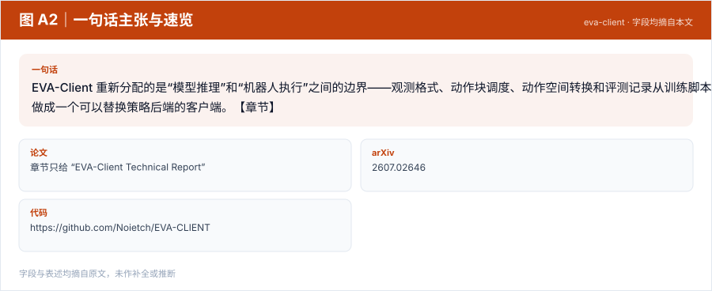
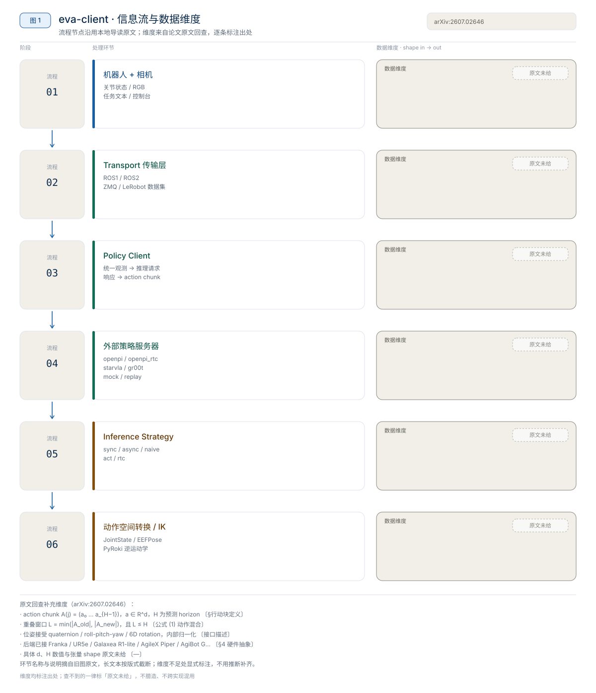
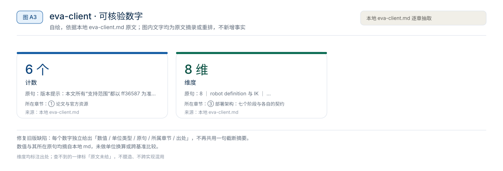
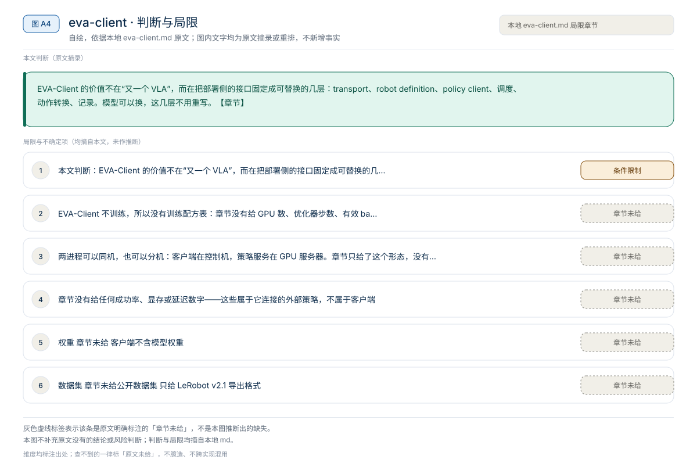

【VLA 精读 · 轻量化部署】DM0.5：把 VLA 在线执行链路逐段压成低延迟服务
DM0.5 重新分配的是“模型语义”和“执行形状”的边界——模型结构保持 Gemma3 VLM + Action Expert + Flow Matching，但把在线执行拆成 prefix 一次编码、suffix 反复采样，再用 TensorRT、FlexAttention、FP8、Triton fused kernels 和 CUDA Graph 压缩固定形状的计算与调度。【章节】
轻量化部署
原题与资源：章节只给 “EVA-Client Technical Report” · arXiv:2607.02646 · 代码
一句话：EVA-Client 重新分配的是“模型推理”和“机器人执行”之间的边界——观测格式、动作块调度、动作空间转换和评测记录从训练脚本里拆出来，做成一个可以替换策略后端的客户端。【章节】
阅读成本：正文约 9645 字 / 10 个章节 / 5 张图；目录按本文原有章节顺序排列，章节内容未改动。
目录（点击跳到对应章节）：

图 A1：本文章节地图（节点即原文 h2 标题）。自绘，依据本文，不新增事实。
EVA-Client 不是新的 VLA 模型，也不是训练框架，而是一个真机部署与评测客户端。本地章节给出的可核验数字都是工程口径：6 个已支持本体（AgileX Piper、ARX R5、Dual Franka Panda、Galaxea R1 Lite、UR5e、AgiBot G2）、6 个策略后端（openpi、openpi_rtc、starvla、gr00t、mock、replay）、5 种动作调度策略（sync、async、naive、act、rtc）、4 种传输入口（ROS1、ROS2、ZMQ、LeRobot 数据集）、7 个控制台页签；Python >=3.10,<3.12，Apache-2.0。章节没有给任何成功率、显存或延迟数字——这些属于它连接的外部策略，不属于客户端。
来源约定：本文事实只取自本仓库 EVA-Client 导读，没有用模型记忆补写技术报告或仓库细节。
标注约定：【章节】指本地导读自己的归纳；【章节转述】指章节对官方 README、Robot Zoo 或项目页的转述。
版本：技术报告 arXiv:2607.02646；代码核对提交ff36587（2026-08-19）；查阅日期 2026-11-01。
| 资源 | 入口 | 阅读用途 |
|---|---|---|
| 论文（技术报告） | EVA-Client Technical Report · arXiv:2607.02646 | 系统动机、五段工作流、部署与评测设计 |
| 源码 | Noietch/EVA-CLIENT | transport、robot definition、policy client、调度器、recorder |
| 权重 | 章节未给 | 客户端不含模型权重；权重与推理属于 openpi / openpi_rtc / starvla / gr00t 等外部后端 |
| 项目页 | colalab.net/projects/eva-client | 工作流图、演示与项目说明 |
| 数据集 | 章节未给公开数据集 | 只给 LeRobot v2.1 导出格式；采集、回放与质量检查都按这套目录组织 |
论文题目：章节只给 “EVA-Client Technical Report”；arXiv：2607.02646；许可：Apache-2.0；Python：>=3.10,<3.12（推荐 3.10）；代码核对：ff36587（2026-08-19）；查阅日期：2026-11-01。
版本提示：本文所有“支持范围”都以 ff36587 为准，Robot Zoo 与策略后端列表会随仓库更新，SO-101 在这个 commit 上仍不可用。另外，章节展示的工作流图里出现 DreamZero，但代码中可直接看到的策略客户端只有上述 6 个；图与代码口径不完全一致，读支持列表时以代码为准。

图 A2：一句话主张与速览字段。自绘，依据本文，不新增事实。
一句话：EVA-Client 重新分配的是“模型推理”和“机器人执行”之间的边界——观测格式、动作块调度、动作空间转换和评测记录从训练脚本里拆出来，做成一个可以替换策略后端的客户端。【章节】

图 1：EVA-Client 的部署链路：传输 → 统一观测 → 策略客户端 → action chunk → 调度 → 动作转换 → 机器人。自绘，依据本地导读；不是论文原图。
对比主流路径：一个脚本里同时加载模型、推理、驱动机械臂、写日志 → 客户端只负责“收观测、要动作、调度执行、留证据”，模型留在原训练框架的推理服务里。【章节】
| 工作流阶段 | 章节对应内容 | EVA-Client 是否负责 | 对本项目意味着什么 |
|---|---|---|---|
| Embodiment | 多种本体，统一机器人描述 | 负责描述与硬件节点接入 | 换机器人主要改 robot definition、hardware node 与 config |
| Data Collection | 遥操作 episode、回放、LeRobot v2.1 导出 | 负责 | 采集数据与训练数据同格式 |
| Policy Training | 外部框架（图里标 OpenPI、StarVLA、GR00T、DreamZero） | 不负责 | checkpoint 与推理服务由外部框架提供 |
| Deployment | 动作块调度、同步/异步执行 | 负责 | 真机卡顿、跳变与延迟积累主要发生在这一层 |
| Evaluation | 成功率、视频、状态、动作曲线、episode 日志 | 负责 | 评测记录可回流为下一轮训练数据 |
来源：本地 EVA-Client 导读 §2。

图 A3：本文可核验的数字摘录。自绘，依据本文，不新增事实。
一个具体任务走一遍 · 本文形状与接口速查（以下均摘自原文，未作推算）：
章节用一张链路图把系统画成“应用层 + 传输层 + 策略客户端 + 调度 + 动作转换 + 记录器”。按数据流拆成七段，每段只回答一个问题。【章节】
| 阶段 | 输入 | 输出 | 章节给出的实现 |
|---|---|---|---|
| Transport | 相机帧、关节状态、任务文本 | 统一观测 | ROS1 / ROS2 / ZMQ / LeRobot 数据集离线回放 |
| Observation | 多相机图像、joint state、指令 | 与本体无关的观测字典 | robot definition 固定名称、顺序、维度与相机 |
| Policy Client | 统一观测 | action chunk | openpi / openpi_rtc / starvla / gr00t / mock / replay |
| Action Chunk | 一段 H 步动作 | 可被调度的时间序列 | 由后端返回，长度与重叠在配置中给 |
| Inference Strategy | 当前块 + 新预测 | 连续下发的动作序列 | sync / async / naive / act / rtc |
| IK / 动作转换 | EEFPose 或关节量 | 关节目标 | JointState 或 EEFPose，EEF→关节用 PyRoki |
| Robot | 关节目标 | 真实运动 | 硬件执行节点，经限位后驱动 |
传输层从执行后端接收相机与机器人状态，并把控制命令发回去。章节给出的入口是 ROS1、ROS2、ZMQ 和 LeRobot 数据集离线回放。【章节】
把传输与策略分开有两个直接收益：同一个策略可以换 ROS/ZMQ 后端；同一台机器人可以切真实硬件、离线数据或 mock 环境做分层排错。章节没有给各后端的吞吐、抖动或 CPU 占用数据。
机器人描述至少要固定：关节名称、顺序、维度与左右臂分组；相机名称、图像尺寸与视角；初始姿态、限位与控制频率；策略用 JointState 还是 EEFPose；需要末端位姿到关节角转换时的 URDF 与 IK 配置。【章节】
末端位姿按每臂 xyz(3) + quaternion(4) + gripper(1) 组织：
dim(EEFPose) = 3 + 4 + 1 = 8 # 每臂：xyz、四元数、夹爪这个 8 维约定是“观测/动作契约”的一部分，不是模型结构：维度、单位（米/弧度）与四元数顺序必须和后端一致，否则会出现“界面有图但机器人乱动”。【章节】
Policy Client 把统一观测转换成模型输入；向远端或本地推理服务发起请求；把响应还原成统一 action chunk。模型的 tokenizer、checkpoint 加载和 GPU 推理继续留在原训练框架里。【章节】
这也解释了它的部署形态：机器人控制机不必承担大模型训练环境，策略服务可以放在另一台 GPU 服务器上，通过端口转发或局域网连接。【章节】
章节把调度策略列成五种，区别在“什么时候请求下一块”和“新旧块怎么衔接”：【章节】
| 策略 | 工作方式 | 适用场景 | 主要风险 |
|---|---|---|---|
sync | 执行完或请求时阻塞等待下一动作块 | 最容易理解的初次联调 | 推理期间机器人停顿 |
async | 后台预测下一块，并对新旧动作做线性交叠 | 默认连续真机执行 | 需正确设置重叠长度和缓冲区 |
naive | 异步请求，新块到达后直接替换旧缓冲 | 快速验证吞吐 | 边界动作可能跳变 |
act | 对多个重叠预测按时间权重集成 | ACT 类策略 | 需维护多块预测及其时间位置 |
rtc | 按已承诺执行的动作对新预测做实时对齐 | OpenPI RTC 等低延迟链路 | 服务端与客户端协议必须匹配 |
如果 action chunk 长度为 $H$、控制频率为 $f_c$、单次推理延迟为 $t_i$，同步执行会在剩余缓冲耗尽时停住：
t_i < H_remaining / f_c # 同步执行不中断的必要条件章节没有给 H、f_c 或 t_i 的具体数值，因此这个不等式只能用来判断“你的配置是否可能停顿”，不能反推任何官方性能。
当策略输出末端位姿、而底层控制器接收关节位置时，需要逆运动学转换，章节点名 PyRoki。实际下发动作还可能经过裁剪、平滑与安全过滤，所以记录时必须把“模型原始动作”和“实际执行动作”分开。【章节】
记录器同时保存观测、模型预测、实际执行命令和评测元信息。实际执行动作不一定等于原始预测：它可能经过裁剪、IK、平滑、人工干预或安全过滤。把这些量分开记录，才能回答失败来自模型、通信、调度还是控制器。【章节】
截至 ff36587，官方 Robot Zoo 列出 6 个本体：【章节转述】
| 本体 | 形态 |
|---|---|
| AgileX Piper | 双 6-DoF 机械臂 + 夹爪 |
| ARX R5 | 双 6-DoF 机械臂 + 夹爪 |
| Dual Franka Panda | 双 7-DoF 机械臂 + 夹爪 |
| Galaxea R1 Lite | 双臂 + 躯干 |
| UR5e | 单 6-DoF 机械臂 + 夹爪 |
| AgiBot G2 | 双臂人形机器人，24-DoF body |
判断“是否真支持”的标准是三处同时存在：README.md、configs/、examples/hardware/。只看项目宣传图不算。【章节】
| 后端 | 作用 | 章节说明 |
|---|---|---|
openpi | 连接 OpenPI 推理服务 | 最常规的接入 |
openpi_rtc | 配合 Real-Time Chunking | 低延迟链路，服务端与客户端协议必须匹配 |
starvla | 连接 StarVLA 推理端 | 只给协议，不给训练环境 |
gr00t | 连接 GR00T 推理端 | 同上 |
mock | 无真实模型时验证通信与界面 | 用于分层排错 |
replay | 用已记录动作回放 | 验证 chunk 形状与执行链路 |
“支持某策略”通常只表示存在客户端协议，不代表仓库附带该策略的训练权重、许可证或完整训练环境。【章节】
控制台把流程分成 MANUAL、COLLECT、REPLAY、DEBUG、RL、EVAL、RESULT 七页；推荐顺序是 MANUAL → COLLECT/REPLAY → DEBUG → EVAL，不要在相机、关节顺序和急停尚未验证时直接连续跑策略。【章节】
一次采集或 rollout 形成 LeRobot v2.1 结构：data/chunk-000/episode_*.parquet、videos/chunk-000/<camera>/episode_*.mp4、meta/ 下的 info.json、episodes.jsonl、episodes_stats.jsonl、tasks.jsonl 与 stats.json。除标准字段外，评测还应保留按 absolute_step 对齐的长表：原始状态、模型动作块、最终执行动作、推理延迟、人工干预、失败标记；质量检查关注 episode 过短、时间戳不单调、相机缺失。【章节】
正式报告成功率时，必须写明机器人、任务文本、场景初始化、每任务次数、成功判据、checkpoint、调度策略和人工干预规则，否则不同策略的数字不可比。【章节】
Issue #94 里作者在 2026-07-09 表示后续会支持；但截至 ff36587，仓库中没有 SO-101 的机器人描述、硬件节点和可运行配置。【章节】最小适配路线是六步：robot definition（Feetech 关节名称/顺序/范围/初始位姿/相机名）→ 硬件执行节点（LeRobot/Feetech 接口 + ZMQ 或合适 transport）→ 明确动作表示（关节位置、增量或其他）并校验维度单位 → 采集/部署/评测 config → 限位、速度限制、急停与单块调试 → fake policy 与录制数据集成测试后再接真实 VLA 服务。
EVA-Client 是工程客户端，本地章节没有给任何消融表：没有“sync vs async 谁更快”的数值，没有“重叠长度多少最稳”的扫描，也没有不同本体上的成功率对照。章节唯一给出的对照是“哪种策略适合哪种场景”的定性建议（见 §3.4）。【章节】
这意味着：
来源：本地 EVA-Client 导读 §3、§10。
章节没有给模型延迟、显存、控制频率或重规划间隔，只给了“同步会停顿”的定性判断和不等式（见 §3.4）。下表把要测的量和口径分开。【章节】
| 指标 | 章节是否给 | 测量口径（需自己补） |
|---|---|---|
| 单次推理延迟 t_i | 未给 | 从发出请求到收到完整 chunk，含预处理、网络、序列化 |
| action chunk 长度 H | 未给具体值 | 取后端配置，按步数而非秒数记录 |
| 控制频率 f_c | 未给 | 按本体与安全限幅设定 |
| 重规划间隔 | 未给 | 约 H / f_c，受调度策略影响 |
| 网络抖动 | 未给 | 分机部署时单独测；局域网与端口转发不同 |
测量协议建议：先 warmup 若干次；分别记录“模型前向”“完整请求”“端到端执行”三个量；每次改动只动一个变量（策略、重叠长度或网络）。1000 / 延迟 只说明策略调用频率，不等于动作执行频率或端到端反馈频率。
来源：本地 EVA-Client 导读 §3.4、§9。
EVA-Client 不训练，所以没有训练配方表：章节没有给 GPU 数、优化器步数、有效 batch、学习率、warmup 或 EMA。它给的是运行时的进程划分。【章节】
进程 A：硬件执行节点
读取相机/关节 -> 发布统一观测
接收动作命令 -> 经过限位后驱动机器人
进程 B：EVA-Client
读取 config -> 连接 transport -> 请求策略服务
调度 action chunk -> 记录与评测两进程可以同机，也可以分机：客户端在控制机，策略服务在 GPU 服务器。章节只给了这个形态，没有给任何一台机器的最小配置、显存占用或并发数。
三级复现按这个项目重新映射：
来源：本地 EVA-Client 导读 §8、§12。
| 顺序 | 路径 / 入口 | 阅读重点 |
|---|---|---|
| 1 | README.md | 支持列表、安装、运行入口与边界说明 |
| 2 | configs/00_openloop/dual_agilex_piper_openloop.py | 不接硬件的 open-loop 配置：数据、相机、回放 |
| 3 | configs/01_deploy/dual_agilex_piper/openpi_qpos.py | 真机部署配置：backend、地址、动作空间 |
| 4 | examples/hardware/ | 各本体硬件节点启动形式（agilex_piper / arx / franka / ur5e） |
| 5 | transport 实现（ROS1 / ROS2 / ZMQ / dataset） | 观测如何打包、命令如何下发；具体路径待按 commit 核对 |
| 6 | policy client（openpi / openpi_rtc / starvla / gr00t / mock / replay） | 统一观测 ↔ 模型输入的转换、chunk 还原 |
| 7 | inference strategy | sync / async / naive / act / rtc 的缓冲与重叠 |
| 8 | robot definition 与 IK | 关节顺序、8 维 EEFPose、PyRoki 调用 |
| 9 | recorder / evaluator 与质量检查 | absolute_step 对齐、成功率与失败标记 |
章节只给到目录与后端名，没有给具体文件路径；第 5–9 行按模块名阅读，路径需按 commit 核对。
坑（章节明确提示或可从支持范围推出）：
ff36587 上缺 robot definition、硬件节点和 config。README.md、configs/、examples/hardware/ 同时存在才算。以下命令来自章节转述的官方 README，未在本机验证；路径与参数需按自己的 commit 替换。
git clone https://github.com/Noietch/EVA-CLIENT.git
cd EVA-CLIENT
curl -LsSf https://astral.sh/uv/install.sh | sh
uv venv --python 3.10 .venv
source .venv/bin/activate
uv pip install -e ".[dev]"
eva --config configs/00_openloop/dual_agilex_piper_openloop.py启动后按终端提示打开控制台，默认通常为 http://127.0.0.1:8080。这一阶段只检查：页面能读到 episode、相机名称与配置一致、关节曲线与 3D 场景随时间变化、回放/暂停/episode 切换正常。它不能证明某个 checkpoint 能控制真实机器人。【章节】
# 章节未给具体命令；先从 configs/ 选 mock 或 replay 后端，
# 确认 action chunk 的维度、长度与时间戳，再换真实后端。这一步能证明通信、配置解析和 chunk 形状正确；不能证明策略质量。
# 终端 1：硬件执行节点（只展示入口形式，需先装对应厂商 SDK / ROS）
bash examples/hardware/agilex_piper/run_agilex_ros.sh
bash examples/hardware/arx/run_hardware.sh
bash examples/hardware/franka/run_hardware.sh
bash examples/hardware/ur5e/run_hardware.sh
# 终端 2：EVA-Client
eva --config configs/01_deploy/dual_agilex_piper/openpi_qpos.py章节给的路线是：open-loop 示例 → mock/replay 验证客户端 → 硬件节点只读状态与图像 → DEBUG 单块短动作确认方向、单位、限位 → sync 建基线再比 async/act/rtc → 少量真实 episode 逐条复核 → 最后才做多 checkpoint、多任务、重复试验的正式评测。【章节】
EVA-Client 的价值不在“又一个 VLA”，而在把部署侧的接口固定成可替换的几层：transport、robot definition、policy client、调度、动作转换、记录。模型可以换，这几层不用重写。【章节】
rtc 与服务端必须成对。absolute_step 记录观测、预测、下发动作与人工干预，把失败片段回流 LeRobot。代价是需要任务级成功判据，不能只靠界面自动推断。相关章节：WALL-X 精读、SmolVLA 精读、π0 精读、EVA-Client 导读、01 技术专题、02 论文与评测。
本文判断：EVA-Client 的价值不在“又一个 VLA”，而在把部署侧的接口固定成可替换的几层：transport、robot definition、policy client、调度、动作转换、记录。模型可以换，这几层不用重写。【章节】
局限与不确定项（以下均摘自本文，未作推断）：

图 A4：局限与不确定项摘录。自绘，依据本文，不新增事实。
覆盖范围：本页新增的导读、目录、章节地图、数字卡与局限清单，均为原文信息的重排或摘录；正文、数据与实验结论未改动。